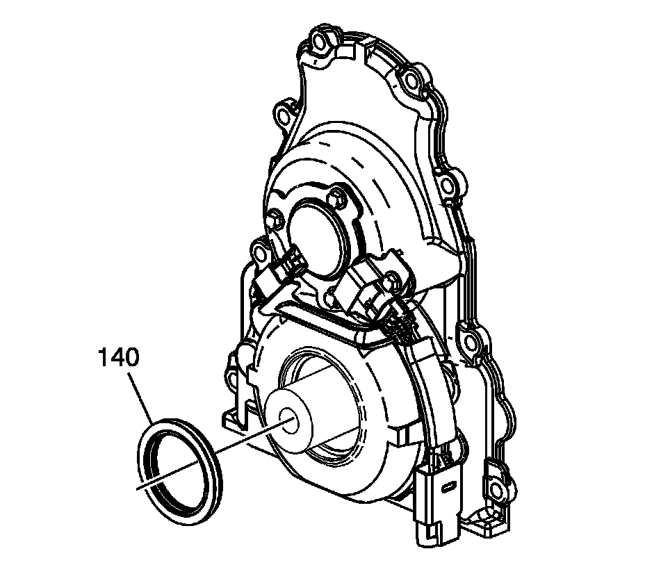
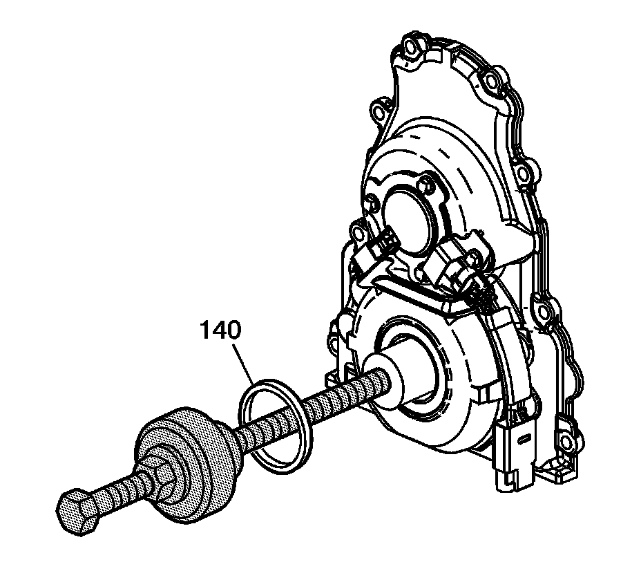

Front Crankshaft Seal: Service and Repair
Crankshaft Front Oil Seal Replacement (RPOs LY6/L76/L92)
Tools Required
J 41478 Crankshaft Front Oil Seal Installer
Removal Procedure

1. Remove the crankshaft balancer.
2. Remove the crankshaft front oil seal (140) from the front cover.
Installation Procedure
Important:
^ Do not lubricate the oil seal sealing surface.
^ Do not reuse the crankshaft front oil seal.
1. Lubricate the outer edge of the oil seal (140) with clean engine oil.
2. Lubricate the front cover oil seal bore with clean engine oil.

3. Install the crankshaft front oil seal (140) onto the J 41478 guide.
4. Install the J 41478 threaded rod (with nut, washer, guide, and oil seal) into the end of the crankshaft.
5. Use the J 41478 in order to install the oil seal into the cover bore.
1. Use a wrench and hold the hex on the installer bolt.
2. Use a second wrench and rotate the installer nut clockwise until the seal bottoms in the cover bore.
3. Remove the J 41478.
4. Inspect the oil seal for proper installation. The oil seal should be installed evenly and completely into the front cover bore.
6. Install the crankshaft balancer.